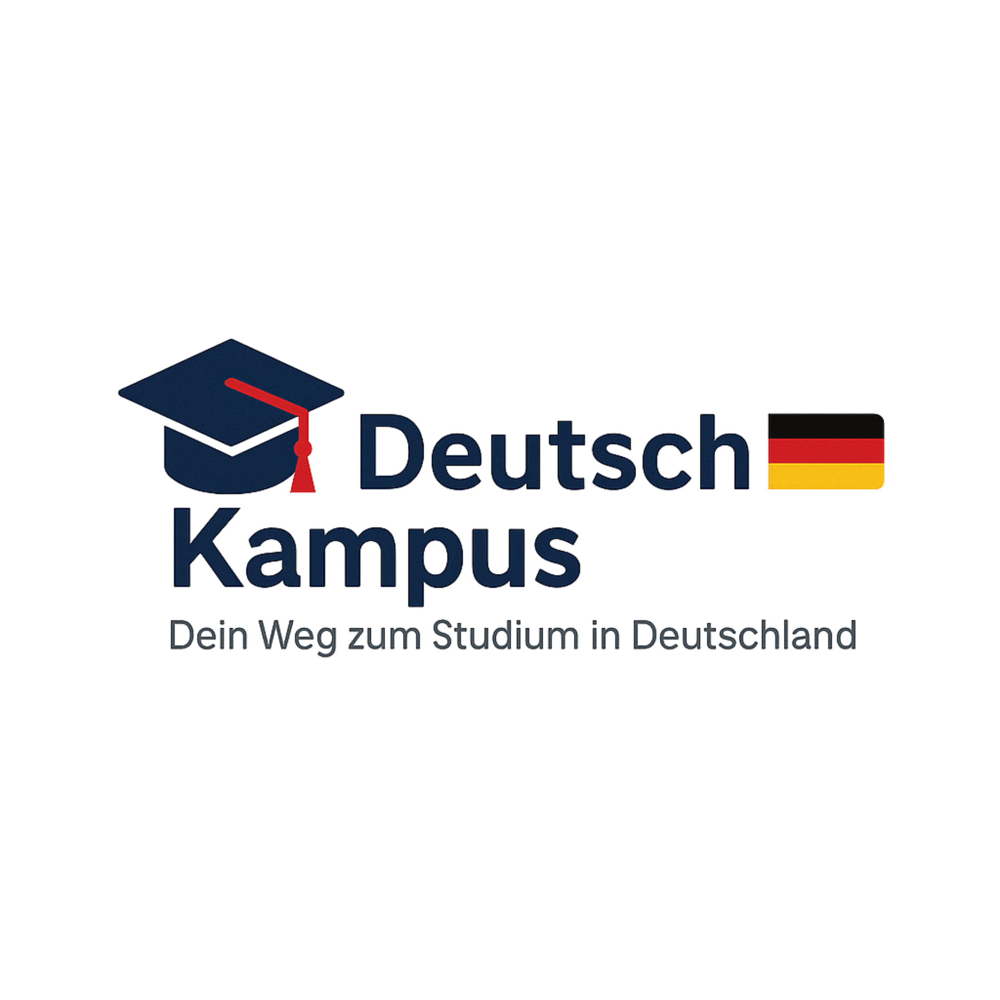

Dünya standartlarında, ücretsiz ve prestijli bir eğitim için bilmeniz gereken her şey.
Almanya, sunduğu yüksek akademik standartlar, güçlü ekonomisi ve uluslararası öğrencilere sağladığı ücretsiz eğitim imkanlarıyla dünyanın en popüler eğitim destinasyonlarından biridir.
Devlet üniversitelerinin %90'ı harçsızdır. Sadece dönemlik cüzi bir katkı payı (Semesterbeitrag) ödenir.
Öğrenci vizesiyle tüm Avrupa'yı özgürce gezme imkanına sahip olursunuz.
Mezuniyet sonrası Almanya'da iş aramak için 18 ay oturum izni verilir.
Almanya'da lisans eğitimi alabilmek için temel kural; Türkiye'de ÖSYM sınavı ile 4 yıllık bir lisans programına yerleşmiş olmaktır.
Almanya'da eğitim sistemi temel olarak iki ana yapıya ayrılır:
Klasik üniversitelerdir. Teori ve araştırma odaklıdır. Tıp, Hukuk, Eczacılık ve Öğretmenlik gibi bölümler sadece burada okunabilir. Akademik kariyer (Doktora) düşünenler için idealdir.
Uygulamalı Bilimler Üniversitesi'dir. Pratik ve sektörel odaklıdır. Mühendislik, İşletme ve Tasarım alanlarında çok güçlüdür. Eğitim sırasında staj zorunluluğu vardır, mezunlar iş hayatına daha hazır başlar.
Eğitim ücretsiz olsa da yaşam giderleri için bütçe ayırmanız gerekir. Almanya devleti, vize aşamasında yıllık yaşam masrafınızı Bloke Hesap (Sperrkonto) içerisinde göstermenizi ister.
Hangi üniversitenin size uygun olduğunu ve kabul şansınızı ücretsiz ön görüşmede değerlendirelim.
Bizimle İletişime Geçin